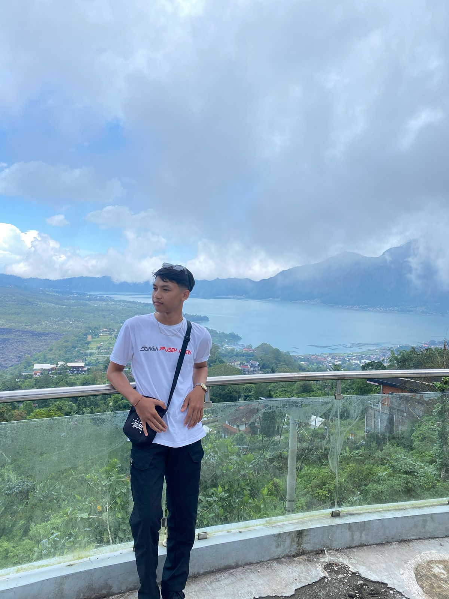

|
 I Nyoman WidiantaraMahasiswa Informatika |
|
Sidebar
|
Selamat Datang di Profil SayaHalo, perkenalkan saya I Nyoman Widiantara. Saya adalah mahasiswa Program Studi Informatika di Universitas Hindu Negeri I Gusti Bagus Sugriwa Denpasar. Website sederhana ini saya buat sebagai bagian dari tugas pembuatan website profil menggunakan HTML dan CSS. Di dalam website ini terdapat beberapa halaman yang menampilkan informasi mengenai pendidikan, skill, serta contoh desain layout website. |
| Footer © 2026 I Nyoman Widiantara | |